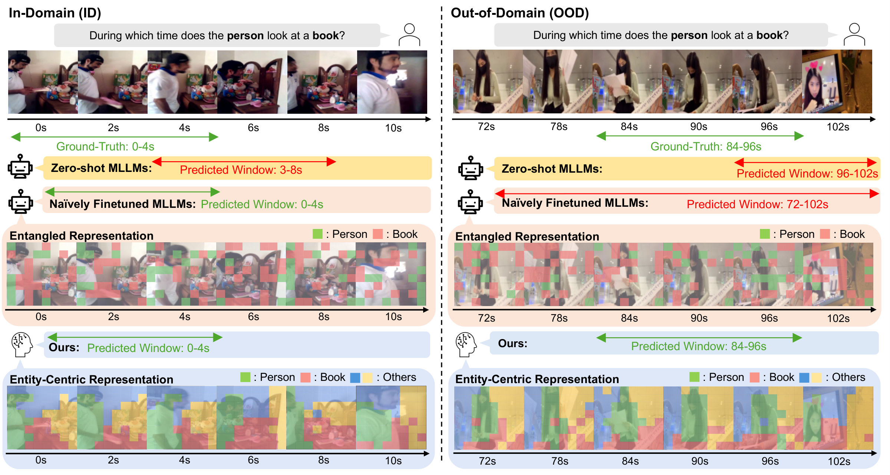
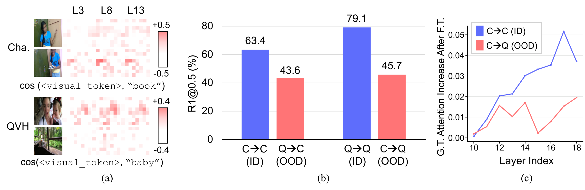
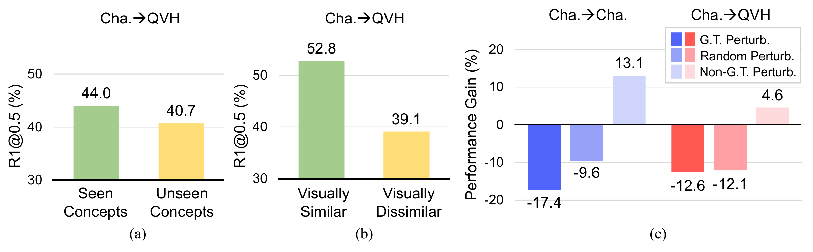
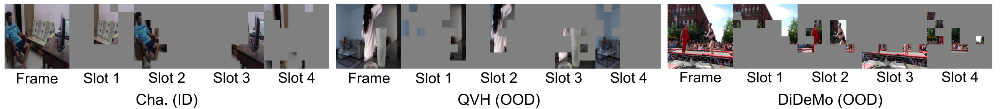
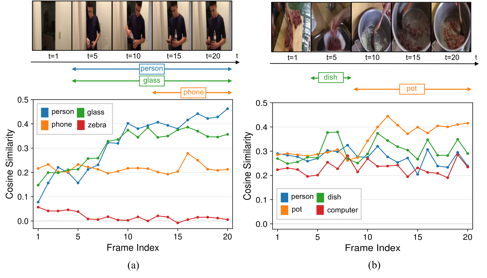

Geo Ahn1* Jiwook Han1* Youngrae Kim2* Joonseok Lee3 Jinwoo Choi1†
1 Kyung Hee University · 2 University of Southern California · 3 Seoul National University
* Equal contribution · † Corresponding author
TL;DR
Fine-tuning MLLMs for Video Temporal Grounding (VTG) often improves in-domain performance but degrades sharply under domain shift. We find that this failure is primarily driven not just by unseen query concepts, but by visual domain shift, which prevents the model from coupling its learned temporal localization knowledge with its inherent entity-attention capability. We introduce EVIDENT, a parameter-efficient adaptation framework that anchors temporal grounding in the inherent entity-attention of pre-trained MLLMs by routing VTG adaptation through explicit visual entity evidence: (i) an Entity Bottleneck Adapter that transforms dense visual tokens into compact entity-level slots, (ii) an Entity-Binding Distillation loss that instills objectness priors into the MLLM visual space, and (iii) an Entity-to-eVidence gating mechanism that steers the model to localize moments containing query-relevant entities. Experiments on cross-domain VTG benchmarks show that EVIDENT consistently improves out-of-domain robustness while preserving competitive in-domain performance with modest parameter overhead.
How EVIDENT works

At a glance
On an unseen domain, naïve fine-tuning loses the moment. EVIDENT keeps tracking the person and the book, so its prediction stays grounded.

Problem Analysis
MLLMs already know where entities are. Fine-tuning teaches when, but on new visuals the two come apart: attention–localization decoupling. Qwen2.5-VL-3B, Cha. → QVH; same trend on InternVL3-2B.

Concept gap: unseen query words. Visual gap: unfamiliar-looking videos.

Approach
Slots separate entities; the MLLM's pre-trained attention decides which ones matter.
Compresses each frame's tokens into 4 entity slots in the early decoder layers, added back as a residual.
Distills DINOv2 objectness into the slot maps, so each slot binds to one coherent entity.
Scores each frame by whether the query's subject and object appear, and scales the adapter there.
Qualitative Analysis
Trained only on Charades-STA, the slots still split people, objects and background on unseen domains.

Each frame colored by its top slot. Cha. (ID), QVH and DiDeMo (OOD).
Each entity's score rises only while it is on screen: person and glass climb together, while the absent zebra stays flat. Because the gate multiplies the subject and object scores, the adapter acts only where both appear, on in-domain and out-of-domain videos alike.

Cross-Domain Results
Train on one dataset, test on the others. Same Qwen2.5-VL-7B backbone as the LoRA baseline; EVIDENT trains only 2.42% of its parameters.
| Source Dataset |
Method | LLM | Target Dataset | |||||||||||
|---|---|---|---|---|---|---|---|---|---|---|---|---|---|---|
| Charades-STA | QVHighlights | DiDeMo | ||||||||||||
| R1@0.3 | R1@0.5 | R1@0.7 | mIoU | R1@0.3 | R1@0.5 | R1@0.7 | mIoU | R1@0.3 | R1@0.5 | R1@0.7 | mIoU | |||
| Zero-Shot | GPT-5 | – | 39.7 | 18.3 | 6.2 | 28.4 | – | – | – | – | – | – | – | – |
| Gemini-2.0-Flash | – | 55.6 | 29.0 | 9.5 | 35.1 | 72.1 | 58.1 | 41.9 | 54.9 | – | – | – | – | |
| HawkEye | 7B | 50.6 | 31.4 | 14.5 | 33.7 | 42.1 | 20.8 | 6.6 | 28.7 | 37.8 | 18.4 | 7.8 | 24.7 | |
| TimeSuite | 7B | 69.9 | 48.7 | 24.0 | – | – | 12.3 | 9.2 | 21.3 | – | – | – | – | |
| UniTime | 7B | – | 59.1 | 31.9 | 52.2 | – | 41.0 | 31.5 | 43.7 | – | – | – | – | |
| VideoMind | 7B | 73.5 | 59.1 | 31.2 | 50.2 | – | – | – | – | – | – | – | – | |
| Charades-STA | EaTR | – | 67.7 | 55.2 | 33.1 | 47.7 | 31.7 | 17.0 | 6.4 | 21.5 | 32.7 | 20.1 | 7.8 | 21.2 |
| CG-DETR | – | 69.7 | 57.6 | 35.1 | 49.5 | 37.4 | 22.8 | 10.5 | 25.2 | 30.3 | 21.8 | 11.0 | 20.7 | |
| Chrono-BLIP | 4B | 79.1 | 68.9 | 48.7 | 58.6 | 67.2 | 44.5 | 23.7 | 44.3 | 56.0 | 43.2 | 23.1 | 37.7 | |
| Qwen2.5-VL† | 7B | 80.3 | 67.7 | 43.9 | 58.1 | 75.2 | 54.3 | 29.7 | 51.2 | 68.2 | 53.8 | 30.3 | 47.4 | |
| EVIDENT (Ours) | 7B | 80.3 | 69.1 | 49.2 | 59.9 | 77.5 | 59.8 | 36.9 | 55.2 | 69.2 | 55.4 | 32.3 | 48.5 | |
| QVHighlights | EaTR | – | 40.8 | 27.2 | 13.0 | 28.0 | 70.3 | 59.6 | 40.3 | 53.1 | 36.0 | 17.8 | 6.5 | 24.1 |
| CG-DETR | – | 42.8 | 25.5 | 12.2 | 28.5 | 77.5 | 65.6 | 52.1 | 61.3 | 36.6 | 21.2 | 8.9 | 24.6 | |
| Chrono-BLIP | 4B | 63.3 | 39.3 | 20.4 | 42.7 | 86.1 | 76.6 | 62.7 | 70.7 | 43.0 | 24.4 | 11.8 | 33.7 | |
| Qwen2.5-VL† | 7B | 71.1 | 48.1 | 26.2 | 47.3 | 86.9 | 78.2 | 64.8 | 72.0 | 59.4 | 34.1 | 16.9 | 38.2 | |
| EVIDENT (Ours) | 7B | 73.3 | 50.2 | 28.0 | 49.0 | 89.5 | 82.2 | 69.1 | 75.3 | 62.4 | 36.0 | 17.4 | 40.6 | |
Gray: in-domain. Bold: best OOD. †: our LoRA baseline. “–”: seen in training or not reported.
Trained on Charades-STA, EVIDENT also improves OOD transfer on Qwen3-VL-8B and InternVL3.5-8B, by up to +10.3 R1@0.7 on QVHighlights for InternVL3.5.
| Backbone | Cha. (ID) | QVH (OOD) | DiDeMo (OOD) | |||
|---|---|---|---|---|---|---|
| R1@0.5 | R1@0.7 | R1@0.5 | R1@0.7 | R1@0.5 | R1@0.7 | |
| Qwen3-VL-8B† | 70.4 | 50.1 | 61.4 | 44.2 | 58.6 | 30.8 |
| + EVIDENT | 70.8 | 50.4 | 64.3 | 46.7 | 60.4 | 30.5 |
| InternVL3.5-8B† | 66.7 | 44.3 | 40.7 | 20.5 | 45.2 | 24.0 |
| + EVIDENT | 72.4 | 49.5 | 48.7 | 30.8 | 55.3 | 29.6 |
†: fine-tuned baseline on the same backbone. Bold: best OOD result per backbone.
Cha. → QVH, Qwen2.5-VL-7B. (b) and (c) use the adapter alone.
| EB Adapter | EB Distill. | E2V | ID @0.5 | ID @0.7 | OOD @0.5 | OOD @0.7 |
|---|---|---|---|---|---|---|
| 67.7 | 43.9 | 54.3 | 29.7 | |||
| ✓ | 68.1 | 49.5 | 54.9 | 33.1 | ||
| ✓ | ✓ | 69.1 | 50.4 | 58.8 | 36.7 | |
| ✓ | ✓ | ✓ | 69.1 | 49.2 | 59.8 | 36.9 |
EB Distillation is what makes the slots useful (+3.9 OOD R1@0.5); E2V gating adds +1.0 on top.
| Placement | ID @0.5 | ID @0.7 | OOD @0.5 | OOD @0.7 |
|---|---|---|---|---|
| After vision encoder | 34.6 | 18.8 | 19.5 | 12.7 |
| Adapter-style (ours) | 68.1 | 49.5 | 54.9 | 33.1 |
Replacing tokens before the LLM collapses; a residual adapter keeps pre-trained alignment.
| Bottleneck | ID @0.5 | ID @0.7 | OOD @0.5 | OOD @0.7 |
|---|---|---|---|---|
| LoRA | 67.7 | 43.9 | 54.3 | 29.7 |
| Adapter w/ self-attn. | 68.8 | 49.5 | 42.4 | 21.0 |
| EB Adapter | 68.1 | 49.5 | 54.9 | 33.1 |
Self-attention overfits (−11.9 OOD R1@0.5); slots keep the ID gain and add +3.4 OOD R1@0.7.
| Entity source | ID @0.5 | ID @0.7 | OOD @0.5 | OOD @0.7 |
|---|---|---|---|---|
| Query-agnostic | 69.3 | 49.4 | 58.4 | 36.0 |
| Query-dependent | 69.1 | 49.2 | 59.8 | 36.9 |
Per-query subject/object words beat fixed “person”/“object” by +1.4 OOD R1@0.5.
| # Slots Ns | ID @0.5 | ID @0.7 | OOD @0.5 | OOD @0.7 |
|---|---|---|---|---|
| 4 | 69.1 | 49.2 | 59.8 | 36.9 |
| 8 | 69.2 | 49.4 | 56.6 | 36.6 |
| 16 | 69.2 | 49.1 | 53.9 | 33.7 |
More slots fragment entities: OOD R1@0.5 drops 5.9 from 4 to 16 slots.
| Visual feature | ID @0.5 | ID @0.7 | OOD @0.5 | OOD @0.7 |
|---|---|---|---|---|
| Before down proj. | 68.4 | 49.0 | 55.8 | 34.1 |
| After down proj. | 69.1 | 49.2 | 59.8 | 36.9 |
| After reconstruction | 69.2 | 50.3 | 51.9 | 29.7 |
Gate on the LLM's visual stream; slot-reconstructed features lose the detail needed to score entities.
If you find this useful
@inproceedings{ahn2026evident,
title = {{EVIDENT}: Routing {MLLM} Adaptation through Entity-Grounded Visual Evidence for Cross-Domain Video Temporal Grounding},
author = {Ahn, Geo and Han, Jiwook and Kim, Youngrae and Lee, Joonseok and Choi, Jinwoo},
booktitle = {Advances in Neural Information Processing Systems (NeurIPS)},
year = {2026}
}
An earlier version of this work, SlotVTG, appeared at the CVPR 2026 GRAIL Workshop.